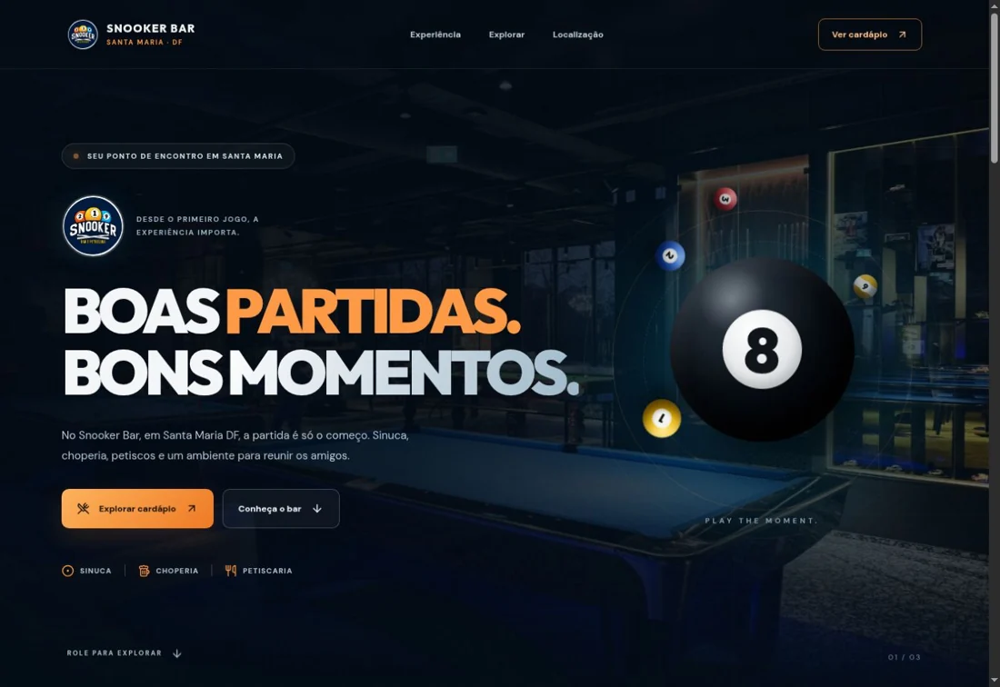
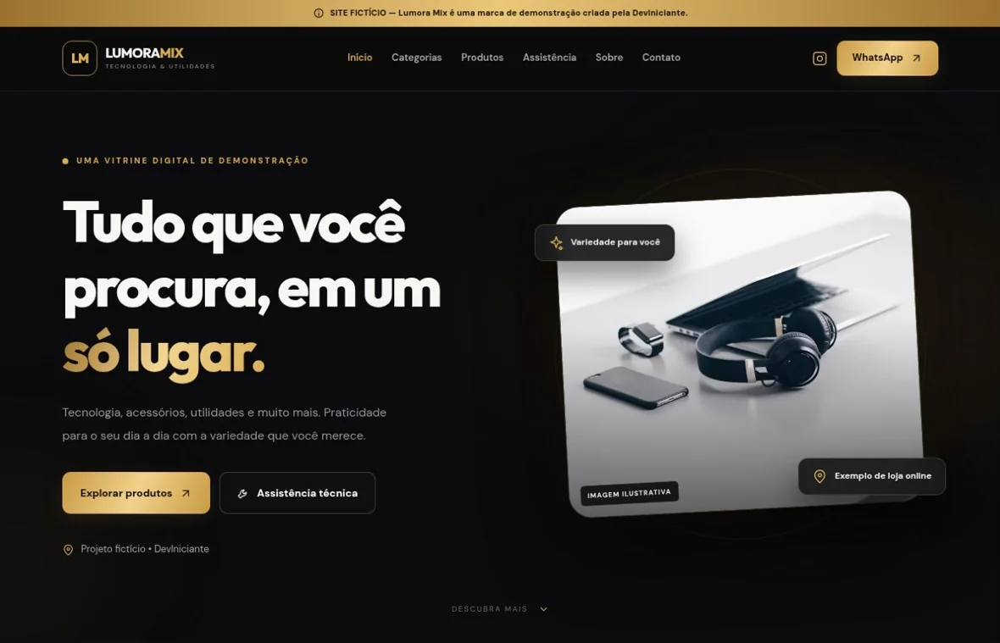

01 / HOSPITALIDADE

CARDÁPIO · LOCALIZAÇÃO01 / Site para negócio
Snooker Bar
Antes de sair de casa ou já à mesa, o visitante pode abrir o cardápio, ver como chegar e encontrar as redes do bar.
Visitar Snooker BarDesenvolvimento web independente
Crio sites sob medida para negócios e projetos que querem mostrar quem são. Do primeiro rascunho ao último detalhe na tela.
01 / Sobre a DevIniciante
Quem entra no site de um bar pode estar procurando o cardápio. Quem abre um portfólio quer entender o que você faz. Essa diferença muda o jeito de construir cada página.
Na DevIniciante, começo por essa pergunta. O que a pessoa veio fazer aqui? A partir dela, desenho o caminho, escrevo o código e coloco movimento onde ele ajuda.
02 / Quem desenvolve
Sou Victor Oliveira Lima, estudante, desenvolvedor front-end e fundador da DevIniciante, no Distrito Federal. Comecei pela lógica de programação e me interessei pelo que acontece quando o código ganha forma na tela.
Veja o que já construíTRAJETÓRIA 03 CAPÍTULOS
Concluí o curso de lógica de programação com Python pela Santander Academy. Foi onde comecei a dividir um problema em passos pequenos o bastante para resolver um por um.
No Curso em Vídeo, estudo HTML e CSS. Nos meus projetos, uso JavaScript para transformar uma página em algo que a pessoa possa explorar.
Criei a DevIniciante para desenvolver sites personalizados. Entre um projeto e outro, experimento interfaces em tempo real com Node.js, Express e Socket.IO e protótipos de jogos com Phaser. Uso Git e GitHub para acompanhar e publicar meu trabalho.
03 / Tecnologias
As ferramentas mudam conforme o projeto. A base é entender o que a interface precisa fazer.
HTML5, CSS3 e JavaScript na estrutura, no visual e nas interações dos sites.
Node.js, Express e Socket.IO em experimentos em tempo real. Phaser em protótipos de jogos.
Git e GitHub para acompanhar alterações e publicar projetos.
Python como base de estudo para lógica de programação.
04 / Portfólio
Um site para um bar, uma vitrine demonstrativa e um presente pessoal em forma de site.

CARDÁPIO · LOCALIZAÇÃO01 / Site para negócio
Antes de sair de casa ou já à mesa, o visitante pode abrir o cardápio, ver como chegar e encontrar as redes do bar.
Visitar Snooker Bar
CATÁLOGO · BUSCA · FILTROS02 / Site demonstrativo
Uma vitrine demonstrativa de tecnologia e utilidades. Criei a Lumora Mix para mostrar como um catálogo com busca, filtros e detalhes de produtos pode funcionar no celular e no computador.
Visitar Lumora Mix03 / Projeto pessoal
Um presente em forma de site. Animações, jogos e surpresas transformam a história do casal em uma experiência para explorar.
Visitar Victor & Ana05 / Serviços
O orçamento considera o objetivo do site, o conteúdo e as funcionalidades do seu projeto.
Solicitar orçamentoUma estrutura feita para a sua ideia, do conteúdo à forma como as pessoas navegam.
Uma página para explicar uma oferta, divulgar um lançamento ou facilitar o primeiro contato.
Apresente a história, os serviços e os canais de contato da sua marca em um só lugar.
Dê espaço ao seu trabalho com projetos apresentados em contexto e fáceis de explorar.
Reúna informações como catálogo, cardápio, localização e canais de atendimento.
Crie uma página com animações, surpresas ou interações que façam sentido para a sua ideia.
06 / Processo criativo
Conhecer seu projeto, seu público e o que o site precisa resolver.
Organizar conteúdo, definir a direção visual e pensar no caminho do visitante.
Construir, testar em telas diferentes e ajustar os detalhes com você.
Colocar o site no ar e conferir se tudo funciona no endereço final.
07 / Próximo projeto
Me conte o que você quer publicar e o que o site precisa fazer. Com isso, preparo um orçamento para o seu projeto.